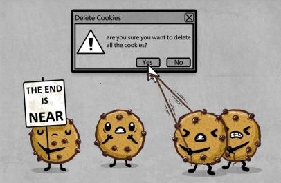

Les Cookies
Les risques :
Le plus gros risque que représentent les cookies c’est qu’un autre site non autorisé puisse venir récupérer les informations très personnelles contenues à l’intérieur des cookies(coordonnées bancaires, identifiants et mots de passe, noms, prénoms, adresse, date de naissance, etc..)
Comment se protéger ? 3 possibilités
- -la navigation privée : votre navigateur n’enregistre aucun cookie, ni aucune trace.
- -un paramétrage plus fin, autorisant les cookies, mais en ayant un certain contrôle
- -le site internet peut nous laisser le choix
Pour les deux derniers, le paramétrage se fait dans les paramètres du navigateur et peut être différent de celui que vous utilisez.
Site réalisé par Petit Samuel et Nathan Mas